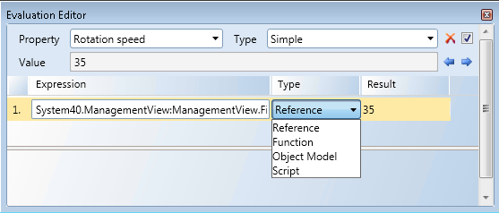
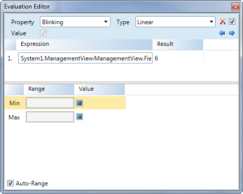
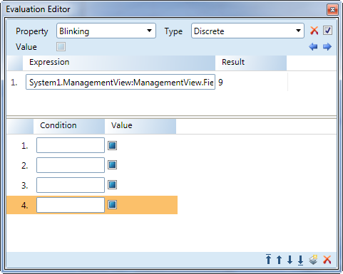
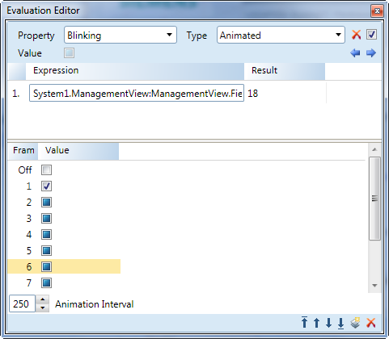
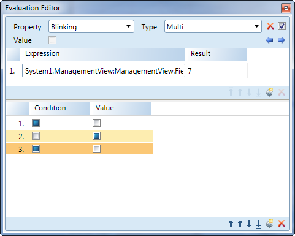

Evaluation Editor View
The Evaluation Editor view allows you to create animated graphics by configuring and applying expressions and substitutions to the properties of an element and associated data point properties.
Expression Section

Evaluation Editor | |
| Description |
Expand/Collapse Button | Expand and collapse the Evaluation Editor view. |
Property | Select from a list of properties in the drop-down menu. The properties listed are all associated with the active element or object on the canvas. The property selected is affected by the evaluation. |
Type | Select and display the type of evaluation to apply to the selected element property. |
| Clear Empty all the fields in the Evaluation Editor, except for the Property field. The Type field is reset to Simple. Use this if you want to recreate an evaluation. |
| Enable\Disable Evaluation Select the check box to enable the current evaluation or, deselect this check box to disable the evaluation. Use this during testing, if you want to temporarily disable an evaluation. |
Value
| Displays the current value used to manipulate the associated graphic object or data point. This is a read-only field: Displays the current value of the property in Test and Runtime mode. In Design mode, the value displayed is the current value of the element property in the Property Viewer. |
| Previous and Next Arrows Select previous or next arrow to scroll through recently created evaluations associated with the active element on the canvas. The arrows are only visible if there are existing evaluations associated with the active element. |
Expression | The path, data point name and property that is being evaluated. The value or result is applied to the property being evaluated. The data point property value can be derived from one of the following:
The path and property name of the data point whose value is applied to the property evaluation.
|
Type | Allows you to select which information from the data point or source in the Expression field, you want to display in the Result field. The options are as follows:
|
Result:
| Display the result of the expression using the value type of the source. The data type of the expression result is always the type of the expression. This value is mapped to the property type. |


Evaluation Editor Tools Menu
Evaluation Editor Tools Menu | |
| Description |
Condition Order
| Organize the conditions in order of preference. Only applies to Animated, Discrete, and Linear evaluations. |
Delete Condition | Delete a condition. |
New Condition | Add a new condition to the list. Only applies to Discrete and Linear evaluations. |
Linear Evaluation Editor Section

Linear Evaluation Fields | |
| Description |
Range | Display the minimum and maximumrange applied to the expression value. If the expression value falls below the Min value, then the associated Value is applied to the property evaluated. If the expression value is higher than the Max range, than that Value is applied to the property. |
Value | Display the value associated with Min and Max fields determine how the property displays in the graphic. |
Auto Range | If checked, the Min and Max value range from the expression is applied. If one of the Min or Max values is left blank, then the corresponding minimum or maximum range is taken from the expression range. |
Discrete Editor Evaluation Section

Discrete Evaluation Fields | |
| Description |
Condition | Display a range or threshold, when met by the expression result, applies the associated Value to the property evaluation. Multiple conditions are supported. |
Animation Editor Evaluation Section

Animated Evaluated Fields | |
| Description |
Frame | The frame number. |
Value | The value that is applied to the expression result during that frame interval. |
Animation Interval | Theinterval time between frames in mille-seconds when animated. The value must be greater than or equal to 100. |
Multi Evaluation Editor Section

Multi Evaluated Fields | |
| Description |
Condition | Associates one check box per expression, indicating whether an expression is true, false, or unspecified. If a condition is true, the associated Value is applied from left (top) to right (bottom) expression. One check box per expression displays for each condition. |
Value | If checked, the enumerated values of a property type display with the property value in the Discrete and Linear Value field. |